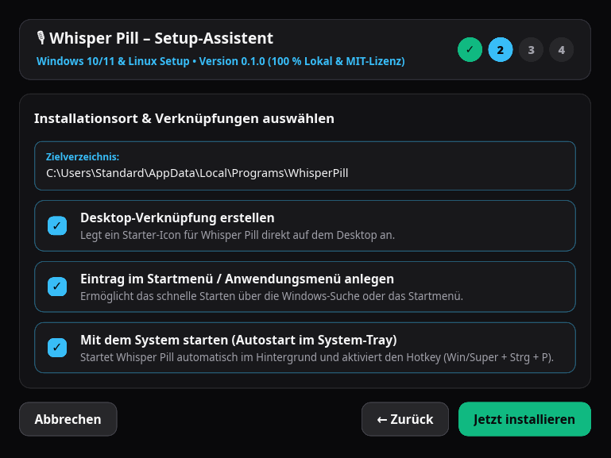

Benutzerhandbuch & Bedienungsanleitung
Schlankes, minimalistisches, schwebendes Desktop-Diktier-Utility für Linux (KDE Plasma, XFCE) und Windows – 100 % lokal, quelloffen und datenschutzfokussiert.
1. Willkommen & Überblick
Whisper Pill ist eine native Desktop-Anwendung mit moderner Slint-Benutzeroberfläche, die gesprochene Sprache per Tastendruck lokal in präzisen Text inklusive Satzzeichen und Kommas umwandelt. Das fertige Diktat wird sofort in die System-Zwischenablage gelegt und steht überall mit Strg + V zum Einfügen bereit.
🔒 100 % Offline & Datenschutz
Lokale Inferenz über whisper.cpp (whisper-rs). Keine Cloud, kein externes Backend, kein Datenabfluss. Audiodaten werden unmittelbar nach der Erkennung im RAM überschrieben.
🎈 Tray-First & Schwebende Kapsel
Läuft unaufdringlich im System-Tray und öffnet das minimalistische Overlay nur während des Diktats oder zur Textkorrektur.
⚡ Maximale Portabilität & Installer
Als 13 MB kompaktes Linux-AppImage ohne Installation ausführbar oder mit dem integrierten Slint-Assistenten fest installierbar.
2. Schnellstart in 3 Schritten
Starte das AppImage oder rufe Whisper Pill nach der Installation auf. Das Icon erscheint im System-Tray.
Drücke Super + Strg + P oder klicke auf das Tray-Icon. Sprich deinen Satz flüssig ein.
Stoppe per Hotkey, Klick oder Pause. Der fertige Text liegt sofort im Clipboard und wird mit Strg + V eingefügt.
3. Visuelle Arbeitsabläufe (Workflows mit Diagrammen)
A) Benutzer-Workflow (User Journey)
B) Visuelle Status- und Bedienübersicht (State Machine)
C) Entscheidungsbaum zur Fehlerbehebung (Troubleshooting)
| Problem / Beobachtung | Mögliche Ursache | Empfohlene Lösung |
|---|---|---|
| Kein Ausschlag in der Wellenform | Falsches Mikrofon gewählt oder Eingangssignal zu schwach. | In den Desktop-Soundeinstellungen (oder pavucontrol) Standardmikrofon prüfen. In den Whisper-Pill-Einstellungen die Automatische Lautstärkeanpassung (Gain) aktivieren. |
| Meldung „Whisper-Modell nicht gefunden“ | Modelldatei (ggml-base.bin) noch nicht im Cache. |
Rechtsklick auf das Tray-Icon ➔ Einstellungen... ➔ Modell wählen und auf Speichern & Übernehmen klicken. |
| Hotkey Super+Strg+P reagiert nicht | Andere Desktop-Umgebung als KDE Plasma aktiv. | Unter XFCE oder GNOME das Tastenkürzel in den Systemeinstellungen auf das AppImage binden oder per Klick auf das Tray-Icon starten. |
| AppImage startet auf Linux nicht | Fehlende FUSE-Laufzeitumgebung. | Paket libfuse2 (Ubuntu/Debian) bzw. fuse2 installieren. |
4. Die 6 Oberflächen-Zustände der Rust-App
4.1 Ruhezustand (Idle – 520 × 48 px)

4.2 Aktive Sprachaufnahme (Recording – 520 × 48 px)

4.3 Fertig & Kopiert (Ready – 520 × 48 px)

4.4 Ausgeklappter Text-Editor (Expanded – 520 × 240 px)

4.5 Integrierter Einstellungs-Dialog (Settings – 580 × 480 px)

4.6 Nativer 4-Schritte Installations-Assistent (Installer – 640 × 480 px)

5. Desktop-Plattformen im Vergleich
| Desktop | Hotkey-Integration | Fenster-Verhalten (Overlay) | System-Tray |
|---|---|---|---|
| KDE Plasma (Wayland & X11) | Automatisch via KGlobalAccel mit strikter Signal-Isolierung. |
Automatische KWin-Regeln (kein Taskbar-Eintrag, Z-Order-Harmonie mit Yakuake). | StatusNotifierItem mit dynamischem Waveform-Icon (ılı). |
| XFCE (X11) | Über XFCE-Tastatureinstellungen oder Tray-Klick. | EWMH-Atome (_NET_WM_STATE_SKIP_TASKBAR via xprop). |
Freedesktop Benachrichtigungsfläche (Status Tray Plugin). |
| Windows 10 & 11 | Klick auf Tray-Icon oder konfigurierbarer Shortcut. | Natives Windows-Frameless-Overlay mit Always-on-Top. | Windows Taskleisten-Infobereich mit vollem Menü. |
6. Tastenkombinationen & Steuerung
| Aktion | Tastenkürzel / Geste | Wirkung |
|---|---|---|
| Diktat starten / stoppen | Super + Strg + P | Startet oder beendet die Sprachaufnahme von überall. |
| Text einfügen | Strg + V | Fügt das fertige Diktat in dein Textverarbeitungsprogramm ein. |
| Kapsel verschieben | Linke Maustaste gedrückt halten | Verschiebt die Kapsel frei auf dem Bildschirm (Position wird gespeichert). |
| Kontextmenü | Rechtsklick auf Tray-Icon | Zugriff auf Einstellungen, Aufnahme, Autostart, Fehlerlog und Beenden. |
7. Konfiguration & Speicherorte
- Konfigurationsdatei:
~/.config/whisper_pill/config.json - Lokale KI-Modelle:
~/.cache/whisper_pill/ggml-base.bin - Fehler- & Diagnose-Log:
~/.local/share/whisper_pill/whisper_pill_error.log - Autostart-Datei:
~/.config/autostart/whisper-pill.desktop